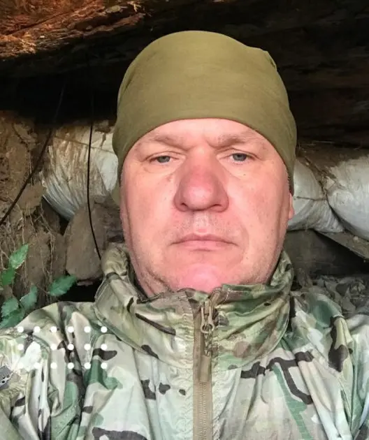
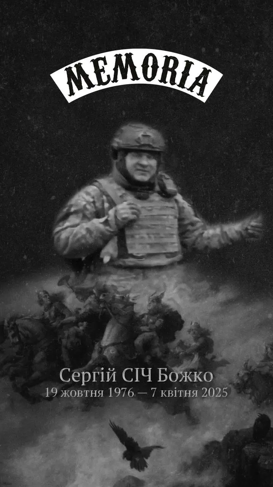
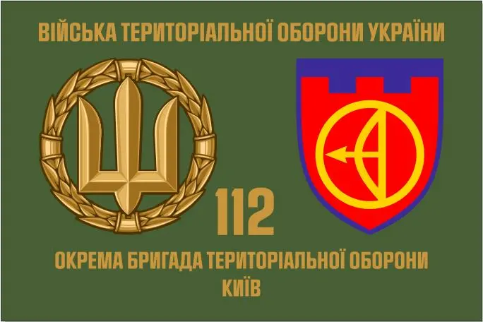

Божко Сергій Миколайович
Молодший сержант.
Народився 19 жовтня 1976 року.
Призваний на військову службу Дніпровським РТЦК та СП в місті Києві.

Спогад про героя


Служив водієм 3 мінометного розрахунку мінометного взводу роти вогневої підтримки, мав звання молодший сержант.
Загинув 7 квітня 2025 року внаслідок ворожого вогневого впливу в районі н.п. Степове Василівського району Запорізької області.